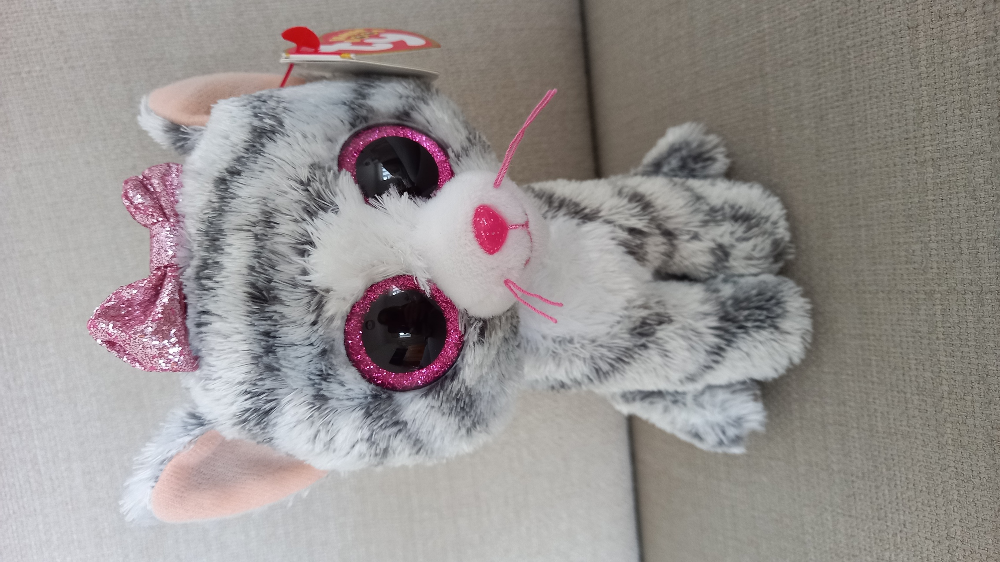
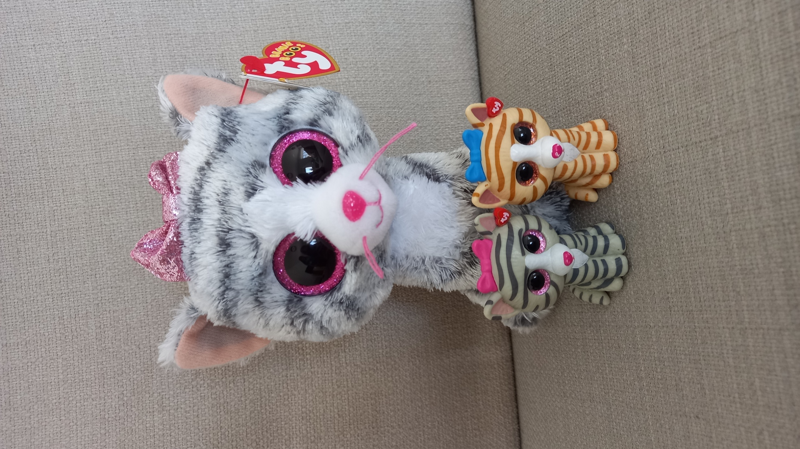

She would be an ordinary cat... if her bow didn't stand out so much!
Born in 2016, Kiki as always stood out in one way or another.
Her energy, her sense of fashion, and her kindness make her the perfect leader for the Cat Club!
She came up with the idea, and it turned out to be a good one.
2. Her mother is a Squish-A-Boo. Scientists still don't know why Squish-A-Boos can make Beanie Boos!
Her energy, her sense of fashion, and her kindness make her the perfect leader for the Cat Club!
She came up with the idea, and it turned out to be a good one.
Fun Facts:
1. Her parents HATE bows, which makes it even stranger that she loves them.
2. Her mother is a Squish-A-Boo. Scientists still don't know why Squish-A-Boos can make Beanie Boos!
Cece and Tabitha

Cece and Tabitha were both born in 2019, as twins! Their birthday is March 5 2019!
2. Their teeth are much smaller than the average 3 year old cat...
Fun Facts:
1. Tabitha is the only cat in her family that isn't gray! Her bow and eye colours are also different!
2. Their teeth are much smaller than the average 3 year old cat...